¿Qué es Chrome DevTools?
Chrome DevTools es un conjunto de herramientas para desarrolladores integradas
en el navegador Google Chrome. Esta herramienta apoya a los desarrolladores
para diagnosticar, depurar y desarrollar aplicaciones web. Gracias a estas
herramientas podemos perfectamente simular la conectividad de internet,
inspeccionar elementos, ejecutar Javascript y muchas otras características
¿Cómo se accede?
Para acceder a estas herramientas, hay 3 formas principales, que son:
- Hacer clic con el botón derecho en cualquier elemento de una página
web y, a continuación, seleccionar la opción inspeccionar.
- Presionar Ctrl+Shift+I (Windows, Linux) o Command+Option+I (macOS).
- Presionar F12.
Paneles de Chrome DevTools
Las Chrome DevTools están compuestas por múltiples secciones/funcionalidades,
entre las cuales se encuentran las siguientes:
- Elements.
- Console.
- Sources.
- Network.
- Performance.
- Memory.
- Application.
Elements
La pestaña elements está enfocada principalmente en el DOM e interacción con las partes
que lo componen (HTML y CSS). Entre sus principales funcionalidades se encuentran
las siguientes:
-
Ver y cambiar las propiedades de los objetos DOM: Visualización de nodos,
navegar por el árbol DOM, filtrado de nodos, editar contenido, editar atributos,
reordenar nodos y esconder nodos.
-
Ver y cambiar CSS de los objetos DOM: Visualización de estilos computados,
herencia CSS, modelo de caja, filtrado de css, propiedades y pseudo-clases.
-
Inspeccionar y depurar diseños CSS Grid y Flexbox: Modificación de diseños grid
y flexbox con paneles interactivos.
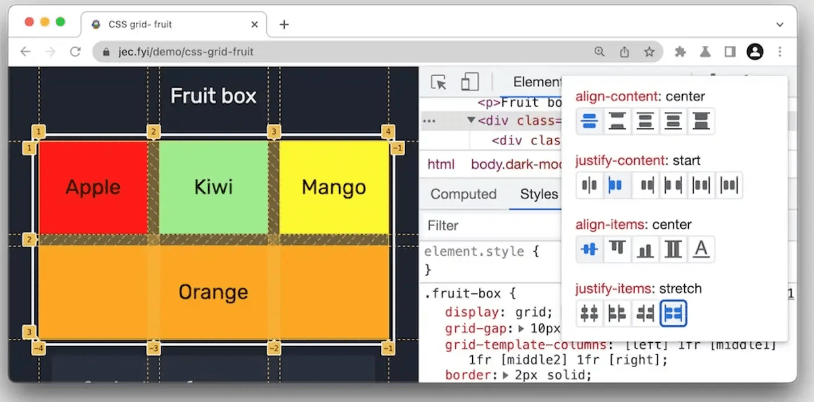
Console
La pestaña console está enfocada principalmente en Javascript. La consola es básicamente
un REPL que permite evaluar declaraciones en Javascript y ver sus resultados inmediatamente.
Entre sus principales funcionalidades se encuentran las siguientes:
-
Ejecutar Javascript: Programación, evaluación de expresiones e interacción con las APIs del navegador.
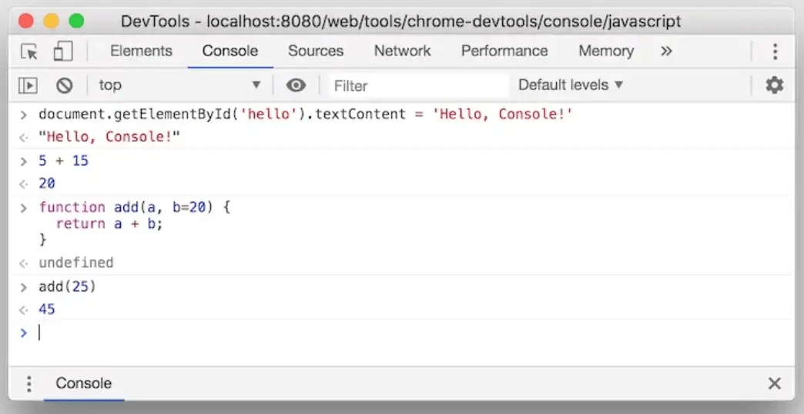
-
Visualización de logs: Registrar y filtrar logs en diferentes niveles; Info, warnings y errors.
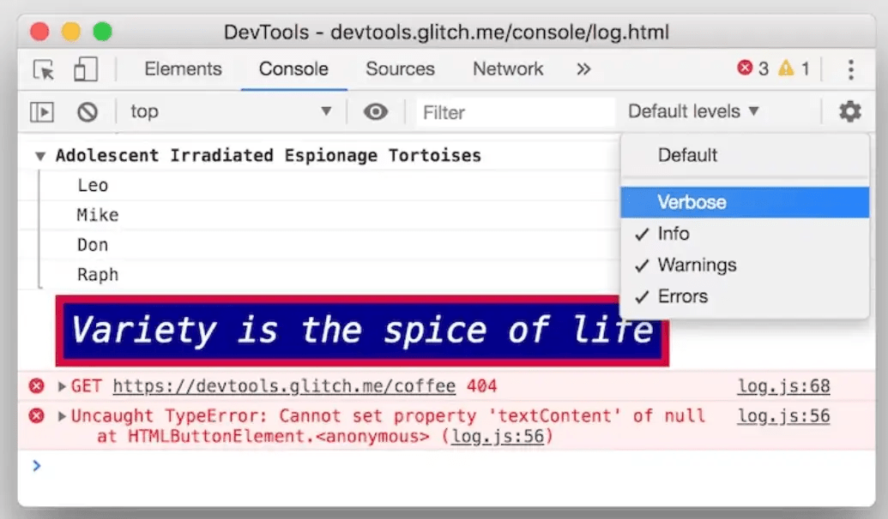
Sources
La pestaña source está enfocada principalmente en archivos y recursos que ha cargado la página, además
cuenta con herramientas enfocadas a la programación y depuración de código. Entre sus principales
funcionalidades se encuentran las siguientes:
-
Visualización y modificación de archivos: Visualización de imágenes, HTML, CSS,
scripts y fuentes cargadas en la página.
-
Creación y ejecución de snippets: Inserción de código empaquetado. Los snippets son scripts
que pueden ejecutar en cualquier página, pueden ser guardados y reutilizarlos. DevTools guarda
el Snippet en el sistema de archivos.
-
Depurador de Javascript: Depurador de Javascript incorporado para establecer puntos de
interrupciones, guardar paradas intencionales y recorrer la ejecución del código línea por línea.
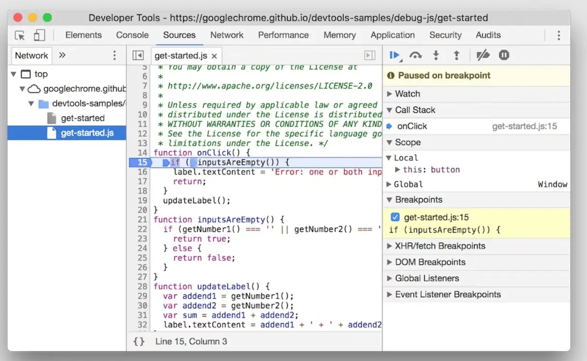
Network
La pestaña network está enfocada principalmente la inspección de la actividad de red de la página.
Entre sus principales funcionalidades se encuentran las siguientes:
-
Registro de la actividad web: Inspección de actividad de peticiones, información de status
HTTP, dominios, filtrado de recursos, tiempo de solicitud, representación gráfica en cascada,
entre otras. Cabe destacar que, de forma predeterminada, los recursos se enumeran cronológicamente.
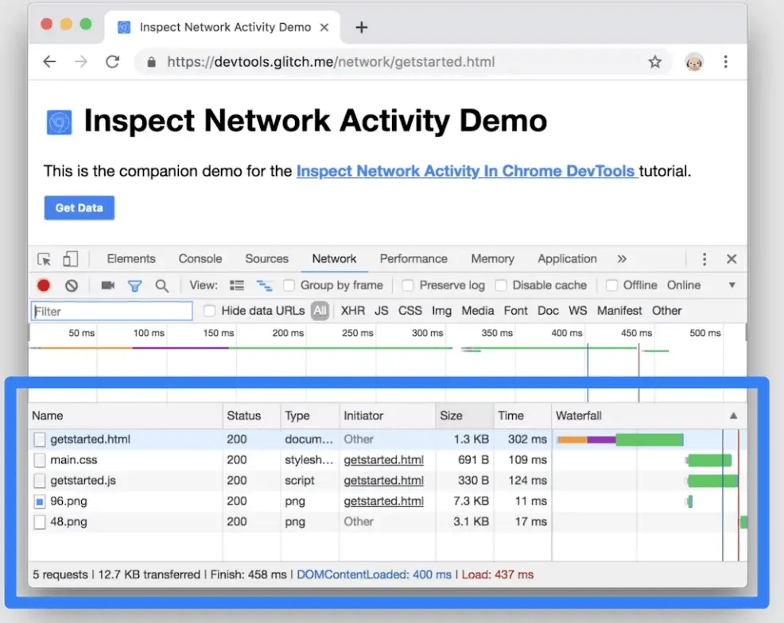
-
Capturas de pantalla: Las capturas de pantalla permiten ver cómo se veía una página a lo largo del
tiempo mientras se cargaba.
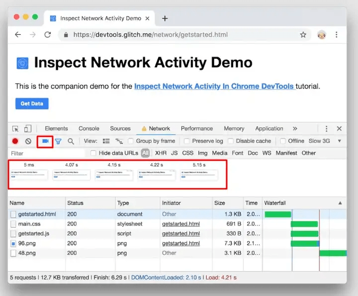
-
Simulación de condición de la red: Simulaciones de conexiones 3g, modo offline y custom.
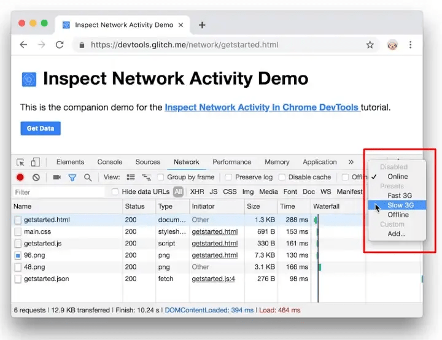
Performance
La pestaña performance está enfocada principalmente la inspección y medición del rendimiento de la
web bajo el modelo RAIL (Response, Animation, Idle y Load). Entre sus principales funcionalidades
se encuentran las siguientes:
-
Análisis de rendimiento RAIL: Registros de capturas, milisegundos, Referencia de eventos de
línea de tiempo, gráficos entre otros ajustes para el análisis y casuísticas.
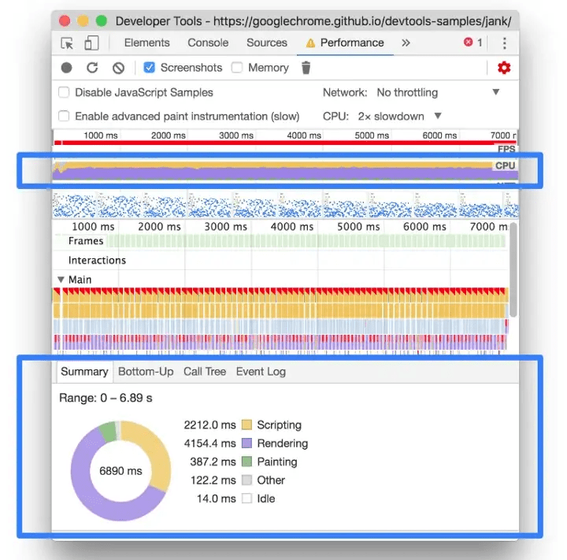
Memory
La pestaña memory está enfocada principalmente para diagnosticar y solucionar problemas de memoria,
como fugas, hinchazones, recolección de elementos no utilizados. Entre sus principales funcionalidades
se encuentran las siguientes:
-
Capturas de pantalla: Almacenamiento con perfiles de almacenamiento dinámico para encontrar
pérdidas de memoria. Comparación de capturas, explorar contenido de memoria y árboles
dominadores para encontrar puntos de acumulación.
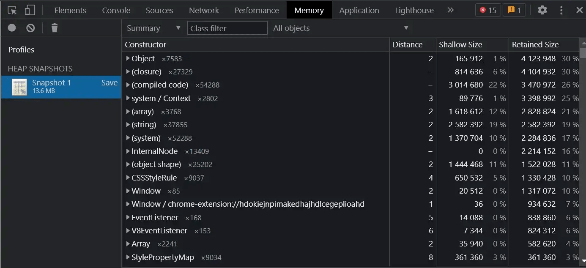
Application
La pestaña application está enfocada principalmente al almacenamiento y gestión de información dentro
del navegador como por ejemplo cookies, local storage o caché. Además, esta pestaña brinda múltiples
herramientas para trabajar con servicios en segundo plano. Entre sus principales funcionalidades se
encuentran las siguientes:
-
Aplicaciones: Herramientas para la creación de Progressive web apps, gestión del manifiesto y Services workers.
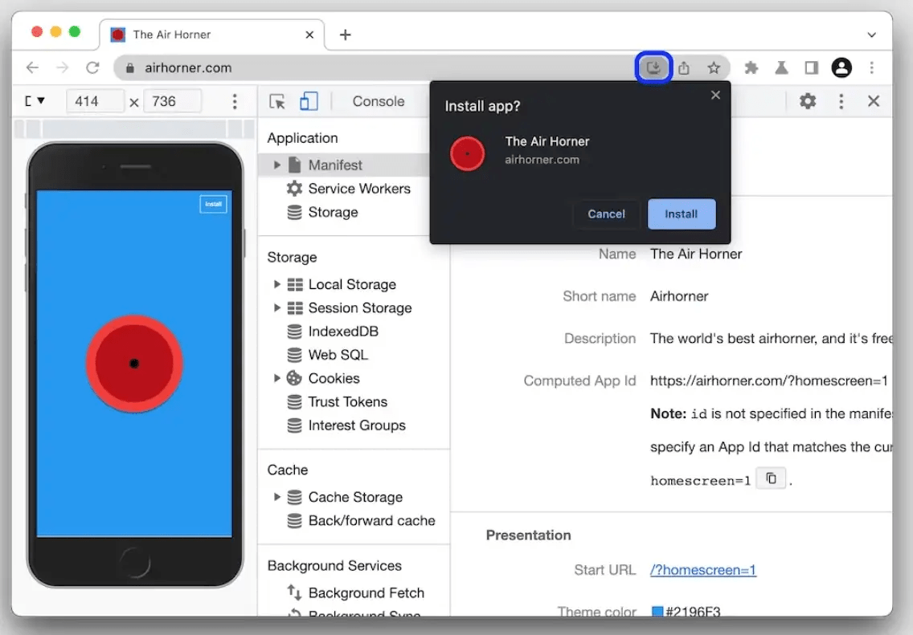
-
Storages: Sistemas de almacenamiento en el navegador. Gestión e interacción con Localstorage, Session Storage,
Indexsed DB y Cookies.
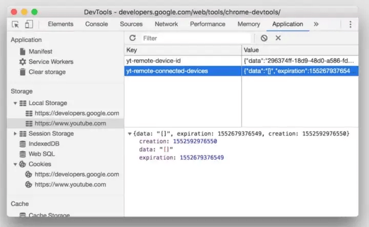
-
Cache: Inspección y gestión de datos de caché del navegador.
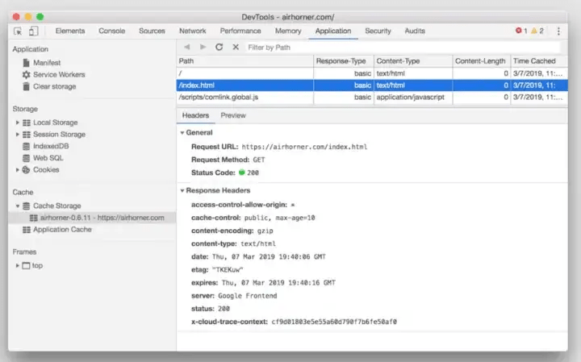